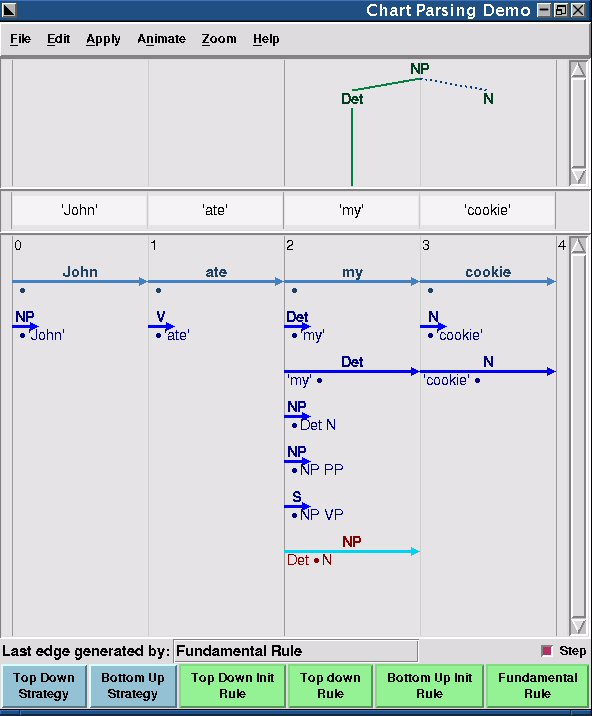

Antes de abordar qué es el procesamiento del lenguaje natural (ó lenguaje humano), pensemos por un momento qué es la compresión. Según Rich y Knigth "comprender algo es transformarlo de una representación a otra, en donde la segunda representación se ha elegido para que se corresponda con un conjunto de acciones posibles que podrían llevarse a cabo, y en donde se ha diseñado la correspondencia de forma que para cada suceso se realice una acción apropiada". En definitiva, comprender algo es transformarlo en una representación que nos sea más útil para lograr nuestro objetivo.
¿Para qué podemos querer que una máquina comprenda lo que pone en un texto? Lo primero que se nos puede ocurrir es que sirva para comunicarnos con ella como si de una persona se tratara, pero para ello no solo requeriría comprender nuestras palabras, sino también las emociones con las que las expresamos, lo cual es algo más complejo. La traducción automática desde un lenguaje natural a otro es algo para lo que solo necesitamos comprender el significado neutral de las palabras. Si conseguimos que un ordenador comprenda, también nos va a ayudar en tareas de recuperación de la información; me refiero a buscadores más eficaces que sepan relacionar mejor unas palabras o frases con otras, e incluso independientemente del idioma.
Para realizar estas tareas es necesario comprender un texto; esto es lo que nos proporciona el procesamiento del lenguaje natural. Veamos las fases de las que se compone [Rich y Knight, 1994]:
Análisis morfológico: Se analizan los componentes de las palabras individuales y se separan de las palabras los constituyentes que no forman parte de ellas, como los símbolos de puntuación
Análisis sintáctico: Se transforman las secuencias lineales de palabras en ciertas estructuras que muestran la forma en que las palabras se relacionan entre sí. Se pueden rechazar algunas secuencias de palabras si infringen las reglas del lenguaje sobre la forma en que las palabras pueden combinarse. Ej: "niña la come mucho" se rechazaría.
Análisis semántico: Se asigna significado a las estructuras creadas por el analizador sintáctico. Es decir, se hace una correspondencia entre las estructuras sintácticas y los objetos del dominio de la tarea. Las estructuras en las que no se pueda realizar tal correpondecia se rechazan. Ej: "Las ideas verdes incoloras duermen furiosamente" se rechazaría
Integración del discurso: El significado de una frase individual puede depender de las frases precedentes y puede influenciar el significado de las frases posteriores. Por ejemplo, la palabra "lo" en "Jaime lo quiso" depende del contexto del discurso, mientras que la palabra "Jaime" puede influenciar el significado de frases posteriores como "Él vive en Madrid".
Análisis de la pragmática: La estructura que representa qué se ha dicho se reinterpreta para determinar su significado actual. Ej: "¿Sabe qué hora es?" se reintepreta como petición de hora.
Hasta ahora hemos estado hablando del procesamiento del lenguaje escrito, si quisiéramos realizar procesamiento del lenguaje oral, necesitaríamos conocimiento adicional sobre fonología, así como suficiente información adicional para manejar las posibles ambigüedades que pudieran surgir.
Existen varias herramientas libres para tratar el procesamiento del lenguaje natural. Podemos encontrar malaga-bin y mmorph. Sin embargo, creo que para juguetear y/o iniciarse en este campo es más adecuado nltk (Natural Language Toolkit), escrito en python y con una licencia copyleft de creative commons.

pantallazo de nltk en ejecución